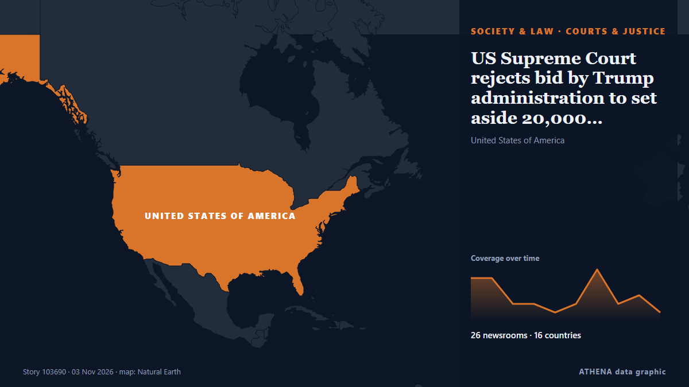

Tribunales y justicia
PatrocinadoPresentado por  Cybernetics and Artificial Intelligence Lab Welcome to the Cybernetics and Artificial Intelligence Laboratory, established at the Department of Business Administration of the National
Cybernetics and Artificial Intelligence Lab Welcome to the Cybernetics and Artificial Intelligence Laboratory, established at the Department of Business Administration of the National
| 21 oct | 0 |
|---|---|
| 22 oct | 0 |
| 23 oct | 0 |
| 24 oct | 0 |
| 25 oct | 0 |
| 26 oct | 0 |
| 27 oct | 0 |
| 28 oct | 0 |
| 29 oct | 1 |
| 30 oct | 6 |
| 31 oct | 5 |
| 1 nov | 4 |
| 2 nov | 8 |
| 3 nov | 0 |
Los titulares se muestran en inglés, tal como se publicaron.

US Supreme Court rejects bid by Trump administration to set aside 20,000 California ballots
Decision comes one day before midterm elections. de Anadolu Agency (English)
PTI's Barrister Salman Safdar meets Imran, Bushra Bibi in Adiala jail
PTI lawyer Barrister Salman Safdar on Monday said he met with party founder Imran Khan and his spouse, Bushra Bibi, at Rawalpindi’s Adiala jail, where they are both incarcerated. de Dawn
Judge Dismisses Trump's $10 Billion Lawuit Against Wall Street Journal Over Epstein Letter
Trump had sued for $10 billion after the newspaper's story was published in July 2025 detailing the president's alleged 2003 letter to Epstein, which apparently featured a drawing of a naked woman. de NDTV
US judge tosses case against ex-FBI officials accused of lying about Hunter Biden probes
US Magistrate Judge Zia Faruqui dismissed the case at a remarkably early stage, finding that prosecutors had not shown sufficient evidence that the two officials knowingly made false statements. de The Jerusalem Post
Rachin Ravindra, Mark Chapman ruled out of New Zealand’s ODI series vs India
Coach Rob Walter says Ravindra is fine to bat, but the risk of diving on his recovering shoulder rules him out of the five-match India series. de Stuff
Russell Brand Is Not ‘Some Kind of Psychopath Who Rapes People and Thinks It’s Normal,’ Defense Lawyer Says in Closing Argument
Russell Brand’s lawyer has told the jury there is “no evidence” that the comedian is “some kind of psychopath who rapes people and thinks it’s normal” in his closing argument. de Variety
Brussels sides with Donald Tusk in Poland’s court crisis
The confrontation has attracted a response from France's Marine Le Pen and Slovenia's Janez Janša. de Euractiv
Poland’s PM vows support for tribunal amid court crisis
Riot police have been guarding the court since Friday afternoon, with several hundred protesters gathered to demand the reinstatement of the president of the country’s Constitutional Tribunal. de Sydney Morning Herald
Polish PM Donald Tusk accuses Russia of backing opponents amid constitutional crisis
Polish Prime Minister Donald Tusk has accused Russia of supporting his political opponents amid an escalating dispute over the country's Constitutional Tribunal, warning that the crisis threatens the… de AzerNews
Korean judges encounter AI-generated fake legal precedents: Survey
SEOUL: Eight in 10 South Korean judges have experienced court cases in which false or nonexistent legal precedents generated by artificial intelligence (AI) were cited, a recent survey by the Supreme… de New Straits Times
Sinn Féin and SDLP welcome Taoiseach's plan to create new body to examine Irish unity
It’s understood the Taoiseach will bring a memorandum before Christmas proposing a new body to examine Ireland’s constitutional future, including Irish unity. de TheJournal.ie
Poland's Constitutional Court crisis deepens as judges allege coup attempt
Poland has been plunged into a constitutional confrontation after police entered the Constitutional Tribunal and its president was reportedly suspended from office, prompting allegations of a coup… de AzerNews
Polish president calls crisis talks after court standoff
Karol Nawrocki cut short a trip to Senegal and returned to Warsaw. de Euractiv
Delta Goodrem impresses judges again with ‘sensational’ Halloween week routine
Singer Goodrem scored 33 for her Viennese waltz. de The Irish News (Belfast)
Polish riot police deployed after court chief suspended
The court frequently ruled in favour of Polish legislation over European Union law. de Euractiv
Polish president Nawrocki pushes his way into top court amid rule-of-law tussle
Karol Nawrocki made his way through protesters around midnight in the latest escalation of his conflict with Prime Minister Donald Tusk. de Politico Europe
Syrian Hacker Behind Fake Tweet That Triggered $136 Billion Market Drop Gets 42 Months in Prison
Ahmad Umar Agha, a Syrian Electronic Army hacker known online as "Th3Pr0," has been sentenced by a U.S. federal court to 42 months in prison for his role in a hacking conspiracy that targeted Western… de The Hacker News
Poland's president returns as court crisis escalates
Polish President Karol Nawrocki turned back to Poland while en route to Senegal after a far-right ally was suspended as head of the country's top court. de RTÉ News